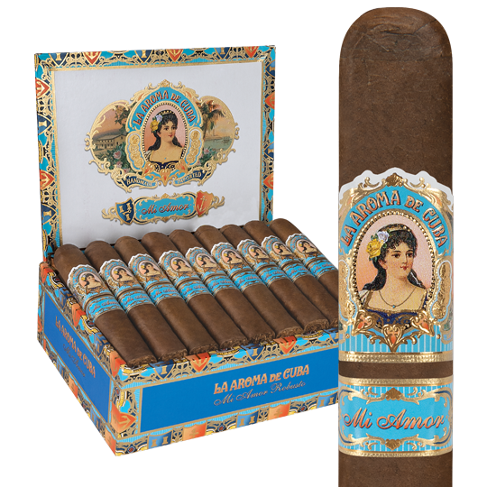

whiskey Sour

Description
The key to an excellent whiskey sour? Getting the balance just right. This whiskey sour recipe has all the right proportions of bright, bracing lemon juice; warming, floral bourbon; and sweet simple syrup to deliver a refreshing cocktail that's neither too cloying nor too biting.
Ingredients
- 2 ounces bourbon
- 3/4 ounces frsh lemon juice
- 3/4 ounce simple syrup
- 1/2 orange wheel (for serving)
- Maraschino cherry (for serving)
Steps
- Combine bourbon, lemon juice, and simple syrup in a cocktail shaker.
- Fill shaker with ice, cover, and shake vigorously until outside of shaker is very cold, about 20 seconds.
- Strain cocktail through a Hawthorne strainer or a slotted spoon into an old-fashioned or rocks glass filled with ice. Garnish with orange wheel and cherry.
Cigar Pairing
La Aroma de Cuba Mi Amor is a critically acclaimed, 95-rated masterpiece and recipient of Cigar Aficionado's #2 Cigar of the Year' honors. Blended by legendary cigar-maker Jose "Pepin" Garcia in Estelí, Nicaragua, Mi Amor is handmade from a dark and decadent San Andrés wrapper leaf over a vintage interior of premium Nicaraguan binder and filler tobaccos. Among the first cigar-makers to establish the San Andrés wrapper as a world-renowned varietal, Pepin Garcia set the benchmark high with Mi Amor's versatile profile of dark chocolate, almond, espresso bean, and cracked black pepper. Hints of coconut emerge before a sweet and zesty finish rounds out this hearty classic in several popular sizes. Savor La Aroma de Cuba Mi Amor without delay.
